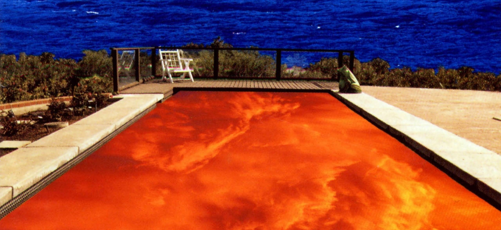

1
Snow (Hey Oh)
Red Hot Chili Peppers
5:34
2
All We Know
The Chainsmokers
3:14
3
Hijo de Hombre
Phill Collins
2:45
4
Iñundik Iñoare
Huntza
2:39
Puede navegar por la playlist mediante las teclas de dirección (↓ ↑)
y controlar la reproducción pulsando enter (↵) o espacio